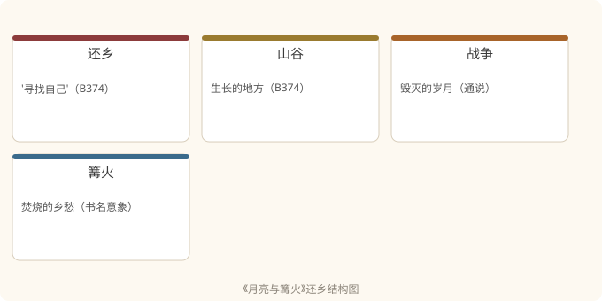

月亮与篝火
一、基本信息
| 作者 | 切萨雷·帕韦泽 |
|---|---|
| 成书/出版 | 1950年（Britannica B374：La luna e i falò (1950)——'the novel considered his best'） Cesare Pavese — Encyclopaedia Britannica（百科全书） |
| 国别/地区 | 意大利 |
| 时代 | 近代 · 20世纪50年代初 |
| 体裁 | 长篇小说 |
| 语言 | 意大利语 |

《月亮与篝火》还乡结构图（主题·结构图）
二、创作背景
Britannica（B374）：'a bleak, yet compassionate story of a hero who tries to find himself by visiting the place in which he grew up'——主角重返生长之地寻找自己。
Britannica（B374）：'the novel considered his best'（被认为其最佳）。
Britannica（B374）：帕韦泽——1943-45与游击队同驻皮埃蒙特——本作的'返乡'背景。
三、内容脉络
（通说待核）'鳗鱼'回到山谷：寻找'自己生长的地方'（B374：visiting the place in which he grew up）。
（通说待核）法西斯岁月的毁灭与乡愁的幻灭。
四、主要人物表
| 人物 | 身份 | 说明 |
|---|---|---|
| '鳗鱼' | 归乡者 | （通说待核，B374未载人名） |
| 尼托 | 旧友 | （通说待核） |
五、主题与艺术特点
- '还乡'的幻灭（B374：bleak, yet compassionate）。
- 战争对乡村的摧毁（通说待核）。
- '山谷'的神话化（通说待核）。
六、影响与评论
- Britannica：'the novel considered his best'（B374）。
Cesare Pavese — Encyclopaedia Britannica（百科全书） - Britannica：帕韦泽的游击队经历（B374 交叉）。
Cesare Pavese — Encyclopaedia Britannica（百科全书）
七、阅读建议
难点
- '鳗鱼'的绰号叙事。
- 朗格山谷的地理（通说待核）。
- 《月亮与篝火》中译本（人民文学等——通说待核）。
- 意大利文原版。
帕韦泽首选；与《生活的职业》对读。
八、待核实
- '鳗鱼'/尼托人名核对（通说）。
- 1950年出版（Einaudi说）待核。
- '山谷'地名细节待核。